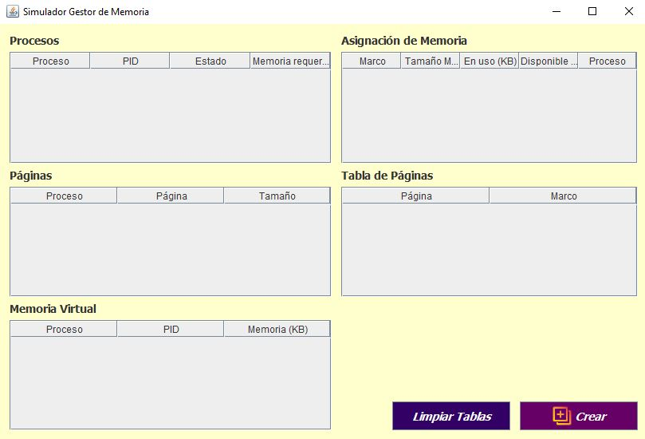
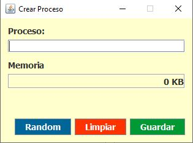
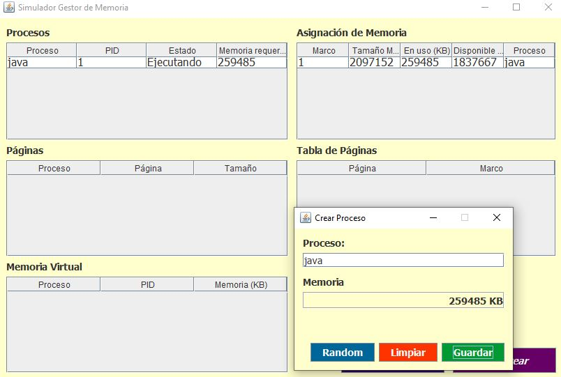
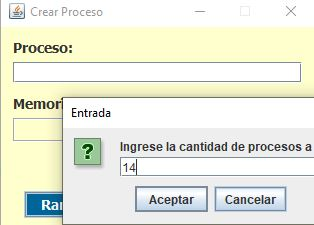
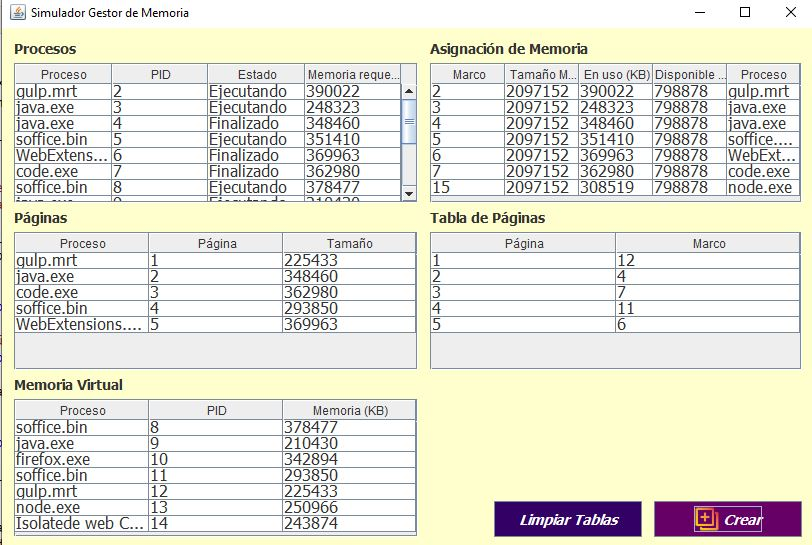

MANUAL DE USUARIO
SOFTWARE SIMULADOR DE GESTIÓN DE MEMORIA FISICA Y VIRTUAL
índice de Contenido
- Acerca del Software
- Requisitos del Software
- Uso del software
1. Acerca del Software
El presente software fue diseñado y desarrollado en NetBeans IDE 8.2 en conjunto con el lenguaje de programación Java, el objetivo principal de este programa es: Simular la gestión de memoria principal de diversos procesos ejecutados en tiempo real.
2. Requisitos del Software
2.1. Instalación de complementos
2.2. Requerimientos del sistema
- Sistema Operativo: Windows
- Espacio disponible en Unidad de almacenamiento: 100 MB
- Resolución de Pantalla: 16:9, 18:9, o superior
3. Uso del software
3.1. Ventana principal: Simulador de Gestión de Memoria

La presente GUI (Interfaz Gráfica de Usuario) cuenta con cinco tablas y dos botones. A continuación se explica su funcionalidad:
- Tabla de procesos: Esta tabla presenta los datos de los procesos creados por el usuario.
- Tabla de asignación de memoria: Permite visualizar el proceso por el cual se consume y se libera la memoria física utilizada por cada uno de los procesos (tareas) a crear.
- Tabla de Página: Permite visualizar la página creada al finalalizar un proceso.
- Tabla de Páginas: Presenta las páginas de los procesos en memoria fisica o virtual.
- Tabla de Memoria Virtual: Presenta solo los procesos en memoria virtual.
- Botón Crear: Permite visualizar la Ventana secundaria: Creador de proceso.
- Botón Limpiar tablas: Simplemente vacía las tablas, siempre y cuando todos los procesos esten finalizados.
3.2. Ventana secundaria: Creador de proceso

La presente ventana permite crear uno o varios procesos a la vez, a continuación se describen sus campos y botones correspondientes:
- Campo de texto Proceso: Permite ingresar el nombre de un proceso.
- Etiqueta memoria: Permite visualizar el valor de memoria en KB asignado aleatoriamente al proceso creado.
- Botón Guardar: Crea y almacena un proceso respetando las normas establecidas.
- Botón Limpiar: Vacía los campos Proceso y Memoria.
- Botón Random: Permite la creación de X cantidad de procesos, respetando las normas establecidas en el proyecto.
3.3. Ejemplo del uso del software
Caso 1: Creación unitaria de procesos
En la presente imagen, se visualiza la creación de un proceso, a su vez, se asigna su memoria aleatoriamente, posteriormente, se presentan los valores en la tabla correspondiente. Por último, al finalizar el proceso libera la cantidad de memoria utilizada, de tal manera, se presenta un ejemplo en la siguiente imagen:

Caso 2: Creación de múltiples procesos

La presente imagen explica a cerca de la creación de 14 procesos mediante el uso del botón random, por lo siguiente, se expone el resultado al dar clic en aceptar la entrada de 14 procesos.

En la presente imagen, se visualizan varios proceso asignados en estado de ejecución y otros en estado de espera, de tal manera, si la memoria física es insuficiente para algún proceso este pasará a memoria virtual, caso contrario se pondrá en espera.
En la tabla asignación de memoria, solo se presentan los procesos en memoria física, por otra parte en la tabla memoria virtual se establecen los procesos en está tabla.